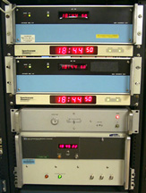

Reference Clock Commands and Options
Master Time Facility at the UDel Internet Research Laboratory
Last update:
26-Sep-2019 06:34
UTC
Related Links
Reference Clock Adddresses
Unless noted otherwise, further information about these ccommands is on the Reference Clock Support page.
Reference clocks are identified by a syntactically correct but invalid IP address, in order to distinguish them from ordinary NTP peers. These addresses are of the form 127.127.t.u, where t is an integer denoting the clock type and u indicates the unit number in the range 0-3. While it may seem overkill, it is in fact sometimes useful to configure multiple reference clocks of the same type, in which case the unit numbers must be unique.
Commands and Options
- server 127.127.t.u [prefer] [mode int] [minpoll int] [maxpoll int]
- This command can be used to configure reference clocks in special ways. The options are interpreted as follows:
- prefer
- Marks the reference clock as preferred. All other things being equal, this host will be chosen for synchronization among a set of correctly operating hosts. See the Mitigation Rules and the prefer Keyword page for further information.
- mode int
- Specifies a mode number which is interpreted in a device-specific fashion. For instance, it selects a dialing protocol in the ACTS driver and a device subtype in the parse drivers.
- minpoll int
maxpoll int
- These options specify the minimum and maximum polling interval for reference clock messages in log2 seconds. For most directly connected reference clocks, both minpoll and maxpoll default to 6 (64 s). For modem reference clocks, minpoll is ordinarily set to 10 (about 17 m) and maxpoll to 15 (about 9 h). The allowable range is 4 (16 s) to 17 (36 h) inclusive.
- fudge 127.127.t.u [time1 sec] [time2 sec]
[stratum int] [refid string] [flag1 0|1]
[flag2 0|1] [flag3 0|1] [flag4 0|1]
- This command can be used to configure reference clocks in special ways. It must immediately follow the server command which configures the driver. Note that the same capability is possible at run time using the ntpdc program. The options are interpreted as follows:
- time1 sec
- Specifies a constant to be added to the time offset produced by the driver, a fixed-point decimal number in seconds. This is used as a calibration constant to adjust the nominal time offset of a particular clock to agree with an external standard, such as a precision PPS signal. It also provides a way to correct a systematic error or bias due to serial port or operating system latencies, different cable lengths or receiver internal delay. The specified offset is in addition to the propagation delay provided by other means, such as internal DIPswitches. Where a calibration for an individual system and driver is available, an approximate correction is noted in the driver documentation pages.
- Note: in order to facilitate calibration when more than one radio clock or PPS signal is supported, a special calibration feature is available. It takes the form of an argument to the enable command described in the Miscellaneous Options page and operates as described in the Reference Clock Support page.
- time2 secs
- Specifies a fixed-point decimal number in seconds, which is interpreted in a driver-dependent way. See the descriptions of specific drivers in the Reference Clock Support page.
- stratum int
- Specifies the stratum number assigned to the driver in the range 0 to 15, inclusive. This number overrides the default stratum number ordinarily assigned by the driver itself, usually zero.
- refid string
- Specifies an ASCII string of from one to four characters which defines the reference identifier used by the driver. This string overrides the default identifier ordinarily assigned by the driver itself.
- flag1 flag2 flag3 flag4
- These four flags are used for customizing the clock driver. The interpretation of these values, and whether they are used at all, is a function of the particular driver. However, by convention flag4 is used to enable recording monitoring data to the clockstats file configured with the filegen command. Additional information on the filegen command is on the Monitoring Options page.
- minjitter secs
- If the source has a jitter that cannot be sensibly estimated, because
it is not statistic jitter, the source will be detected as falseticker
sooner or later. This has been observed e.g. with the serial data of
certain GPS receivers. Enforcing a minimal jitter value avoids a too
low estimation, keeping the clock in the zoo while still detecting
higher jitter.
- Note: this changes the refclock samples and ends up in the
clock dispersion, not the clock jitter, despite being called jitter. To
see the modified values, check the NTP clock variable "filtdisp", not
"jitter".
- The falseticker problem can also be avoided by increasing tos
mindist, which extends the intersection interval, but that affects
the root dispersion and is intended for the case of multiple reference
clocks with reliable jitter that do not intersect otherwise.
- device 127.127.t.u [timedata devpath] [ppsdata devpath]
-
This command can be used to specify the devices a reference
clocks should use. Every clock has a special hard-coded builtin
name to use, and while it is possible to make a symlink from the
expected name to the real device, doing so is not always
convenient. On some platforms or setups it is much easier to
specify the real device name in ntpd's configuration file.
-
Note: It is not necessary to specify device names
in the configuration file; in such a case the builtin name will be
used. But once a device name is given, it will be used as
specified. There's no fallback in case of errors.
-
The arguments are:
- timedata devpath
-
Defines the device that provides the time code data stream;
for e.g. NMEA, devpath could be "/dev/ttyS7" on a
POSIX-like system or "\\.\COM4" for another widely used OS.
- ppsdata devpath
-
Defines the device that provides the PPS timing stream. By
default, the time data stream is expected to be able to
provide the PPS data, too. (Proper wiring and hardware
assumed, of course.) This is true for all OSes that implement
the PPS API as originally designed for BSD variants.
But on some hardware the PPS signal cannot not delivered to
the UART that handles the serial data; instead it might
be routed to a GPIO pin, and that means that we need a
way to define the device where the PPS data can be acquired
from. The ppsdata definition provides support for such
use cases.